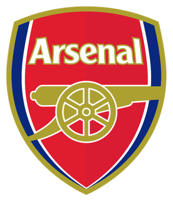

最爱的阿森纳
阿森纳足球俱乐部（英语：arsenal football club），简称阿森纳，是一家设于伦敦霍洛威的英格兰体育俱乐部。阿森纳现在于英格兰足球超级联赛比赛，曾赢得13次顶级联赛冠军、13次英格兰足总杯冠军、2次英格兰联赛杯冠军、15次英格兰社区盾冠军、1次国际城市博览会杯冠军和1次欧洲优胜者杯冠军。

阿森纳足球俱乐部（英语：arsenal football club），简称阿森纳，是一家设于伦敦霍洛威的英格兰体育俱乐部。阿森纳现在于英格兰足球超级联赛比赛，曾赢得13次顶级联赛冠军、13次英格兰足总杯冠军、2次英格兰联赛杯冠军、15次英格兰社区盾冠军、1次国际城市博览会杯冠军和1次欧洲优胜者杯冠军。